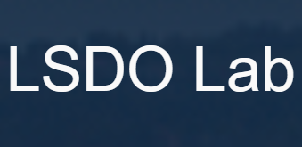
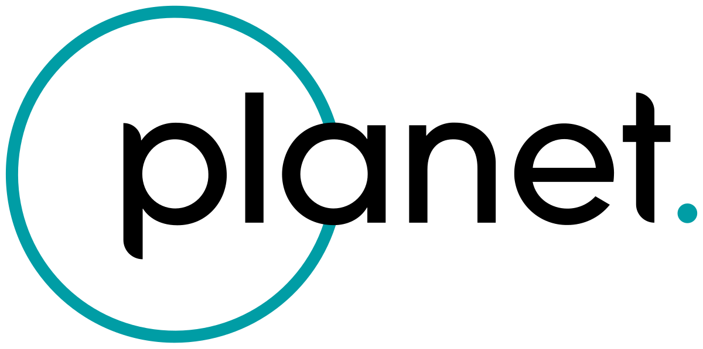
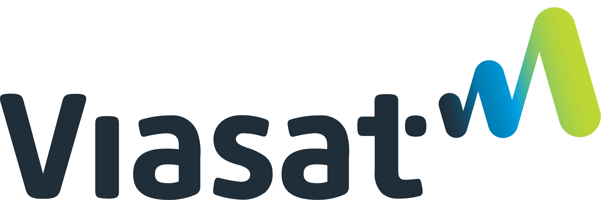

Experiences



L
2025 – Present
UCSD - Design Optimization Laboratory
Aircraft and quadrotor design optimization integrating aerodynamics, GNC constraints, and mission performance.
Read More
PL
Summer 2025
Planet — Systems Engineering Intern
Spacecraft systems analysis, risk reduction, and environmental testing support for the Pelican Block II program, including GNC, power, and structural validation.
Read More
VS
2023 – 2025
Viasat — Satellite Operations Intern
Developed operational tools and supported flight dynamics activities including station-keeping optimization and anomaly mitigation for GEO satellites.
Read More